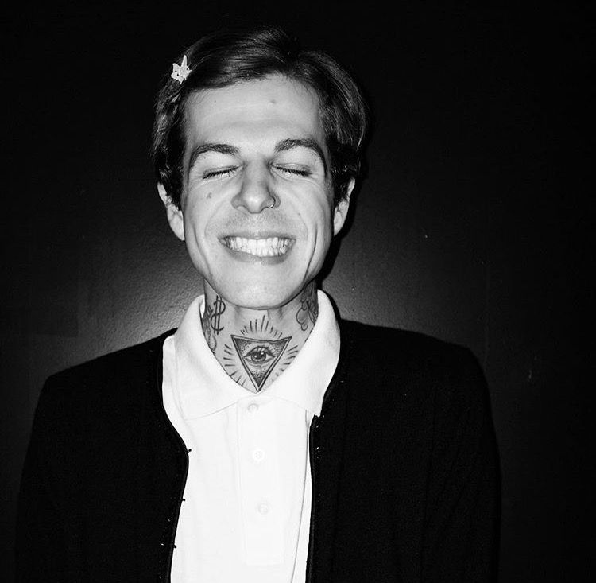
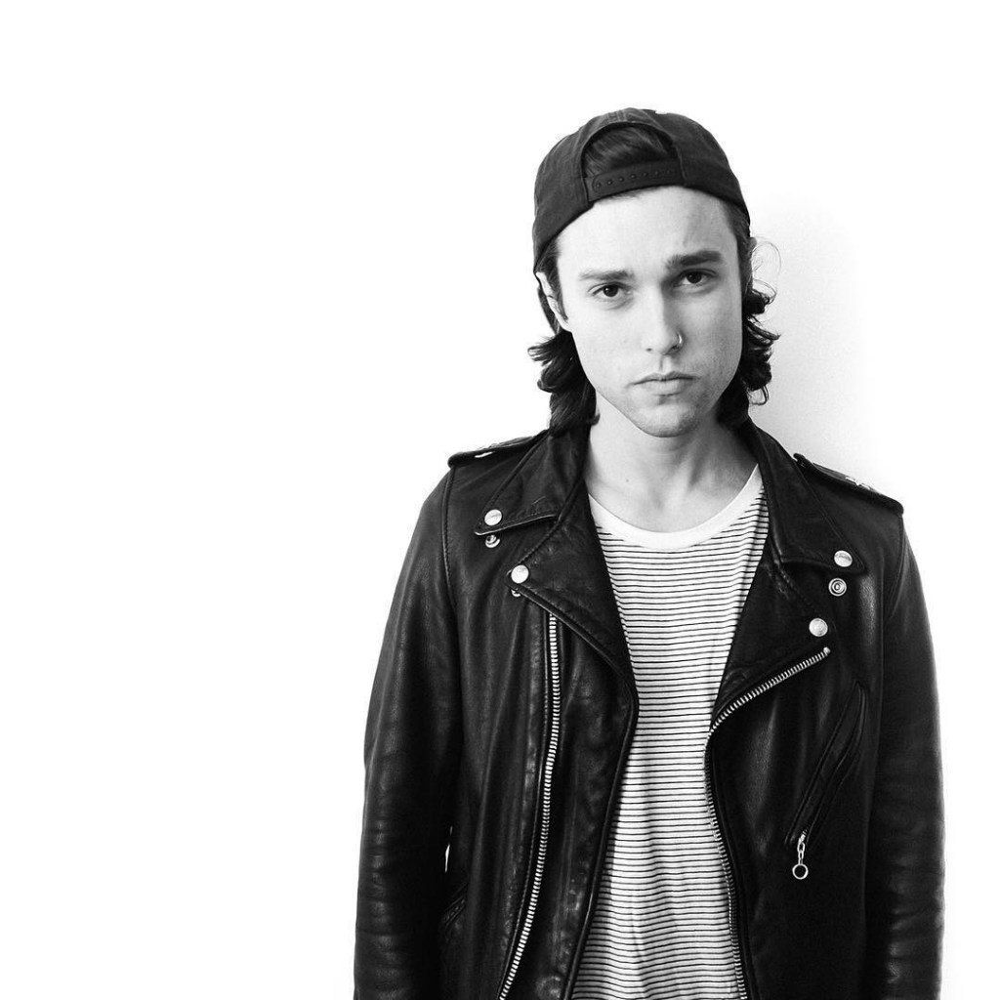
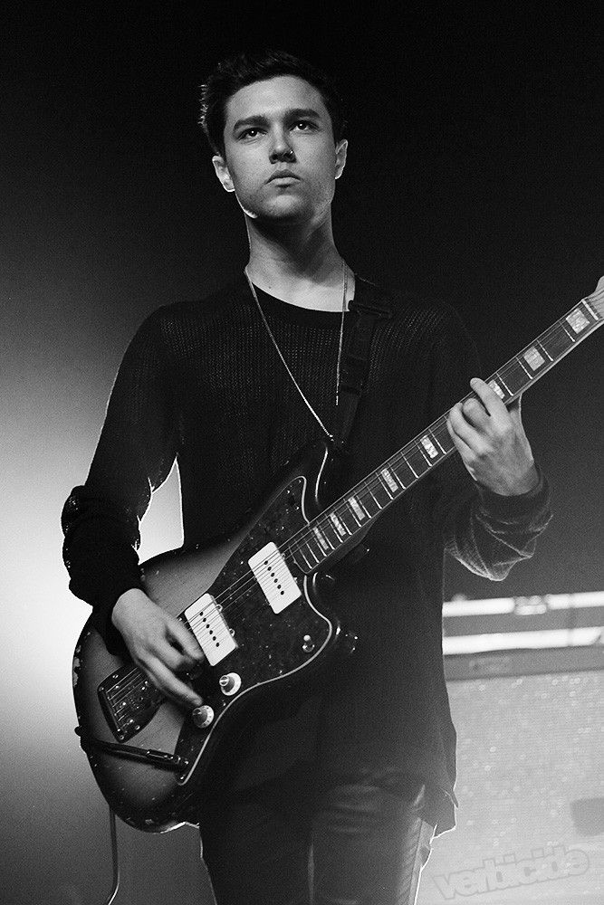
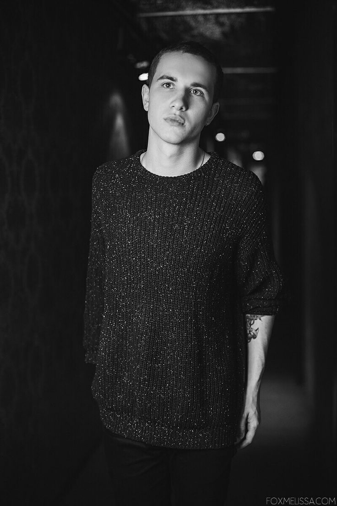
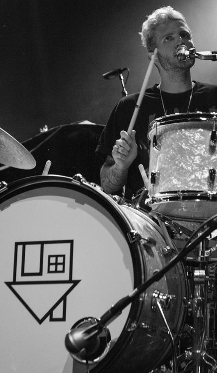

Главная |
Общая информация |
История |
Дискография |
Видеоклипы |
Источники |
Заказать |
Контакты
Общая информация
Название: "The Neighborhood" иногда используется аббревиатура THE NBHD
Страна:США (Таузанд-Окс, Калифорния)
Годы: 2011-2022
Состав группы(те, кого знают как The NBHD):
- Джесси Джеймс Разерфорд(солист) 
- Зак Эбелс(гитара) 
- Джереми Фридмэн(гитара) 
- Майки Маргот(гитара) 
- Брэндон Фрид(ударные)
В дальнейшем состав менялся только единожды:
- Брайан Саммис(ударные) 
Сейчас артисты продолжают творить, радуя поклонников своей музыкой. Они ведут соц. сети и официальный сайт, где делятся фото и сообщают о новостях.
© Все права защищены.